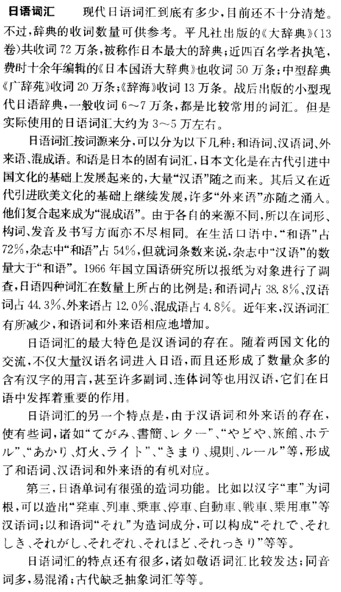

第三课 これは大きい工場です。¶
生词表¶
单词 |
词类 |
释义 |
|---|---|---|
こうじょう[工場] |
名 |
工厂 |
じどうしゃ[自動車] |
名 |
汽车 |
じてんしゃ[自転車] |
名 |
自行车 |
タイヤ |
名 |
轮胎 |
つよい[強い] |
形 |
强，有劲 |
ふるい[古い] |
形 |
旧 |
れんが[煉瓦] |
名 |
砖 |
たてもの[建物] |
名 |
建筑物 |
びじゅつかん[美術館] |
名 |
美术馆 |
ゆうめい[有名] |
形动 |
有名，闻名 |
ホテル |
名 |
西式旅馆饭店 |
げきじょう[劇場] |
名 |
剧场 |
あたらしい[新しい] |
形 |
新的 |
あまり |
副 |
（下接否定）（不）怎么，（不）太 |
いつも |
副 |
平常，经常，无论何时 |
しずか[静か] |
形动 |
平静安静 |
まち[町] |
名 |
镇，城镇，街 |
どんな |
连体 |
的，哪样的，什么样的 |
うみ[海] |
名 |
大海 |
ちかい[近い] |
形 |
近的 |
くうき[空気] |
名 |
空气 |
たいへん[大変] |
形动 |
重大，严重，很， |
きれい |
形动 |
漂亮 |
ビル |
名 |
大楼 |
よつや[四谷] |
名 |
（地名）四谷 |
ちがう[違う] |
自五 |
不同，不一样 |
つぎ[次] |
名 |
下次，下回，第二 |
しんじゅく[新宿] |
名 |
（地名）新宿 |
あるく[歩く] |
自五 |
走，步行 |
ふん[分] |
助数 |
（时间）分钟 |
ぐらい |
副助 |
大约，大概 |
句型¶
一、
（体言）は（形容词）です。/ ……是……的。
（体言）は（形容词连用形）ないです・ありません。 / ……不是……的。
あの工場は小さいです。
あの工場は小さくないです。
この万年筆は新しいです。
この万年筆は新しくありません。
二、
（体言）は（形容动词）です。 / ……是……的。
（体言）は（形容动词词干）ではありません。 / ……不是……的。
この辺りは静かです。
この辺りは静かではありません。
あの花は綺麗です。
あの花は綺麗ではありません。
三、
あまり…ない / 不太……
あの工場はあまり大きくないです。
この辺りはあまり静かではありません。
四、
（场所名词或代词）に（近い・遠い）。
京都は海に遠いです。
学校は公園に違いで。
五、
そんなに…ない / 没那么……。
この本はそんなに難しくありません。
外はそんなに難くないです。
语法¶
一、形容词¶
终止形
用于句末表示结句。
连用形
将基本形结尾的「い」变成「く」，后接「ない」或「ありません」表示否定。
二、形容动词¶
表示事物的性质，状态的独立词，以「だ（です）」为词尾。
终止形
位于句末表示结尾，简体基本形结尾是「だ」，敬体的词尾是「です」。
连体形
将词尾的「だ（です）」变成「な」后接体言，用作定语。
连用形
词尾的「だ（です）」变成「で」，后续「ない」或「ありません」时，表示否定。常用「ではない（ではありません）」的形式，「は」起到否定的作用。
三、描写句¶
用形容词、形容动词作谓语来描写人或事物性质、状态的句子叫作描写句。
四、语气助词「ね」¶
接在体言和活用词的终止形后面表示对事物的断定，带有轻微的感叹，有时带有征求对方同意，促使对方回答的语气。
あの工場は小さいですね。
この辺りは静かですね。
あなたは日本人ですね。
これはあなたの本ですね。
五、副词¶
用来修饰形容词，形容动词，动词和其他副词的无词尾变化的独立词叫做副词，它可以做状语来。说明被修饰语的状态或程度的。
この工場はあまり大きくないです。
この辺りはいつも静かです。
あなたの家の辺りはどうでしょうか？
空気は大変綺麗です。
六、格助词「で」¶
接在体言之后表示原因，理由相当于汉语的“因为”。
酒で有名な町。/ 因酒而驰名的城镇。
受験準備で忙しい。/ 因为准备考试很忙。
课后习题¶
补充生词¶
单词 |
词类 |
释义 |
|---|---|---|
らくよう[洛陽] |
名 |
洛阳 |
みやこ[都] |
名 |
首都 |
ぼたん[牡丹] |
名 |
牡丹 |
きょうがっかん[教学館] |
名 |
教学楼 |
にし[西] |
名 |
西 |
きた[北] |
名 |
北 |
ほう[方] |
名 |
方向 |
としょかん[図書館] |
名 |
图书馆 |
にぎやか[賑やか] |
形动 |
热闹繁华 |
あかるい[明るい] |
形 |
明亮 |
りっぱ[立派] |
形动 |
宏伟 |
のりもの[乗り物] |
名 |
交通工具（电车、公交车等） |
べんり[便利] |
形动 |
方便的 |
かし[菓子] |
名 |
糕点 |
おいしい[美味しい] |
形 |
好吃 |
あつい[暑い] |
形 |
天气热 |
おもしろい[面白い] |
形 |
有趣 |
むずかしい[難しい] |
形 |
难 |
くるま[車] |
名 |
车（人力车、马车） |
たかい[高い] |
形 |
高，（价格）昂贵 |
つかいかた[使い方] |
名 |
用法 |
かんたん[簡単] |
形动 |
简单的 |
しんせつ[親切] |
形动 |
亲切的 |
しんかんせん[新幹線] |
形 |
日本高速铁路新干线 |
まじめ[真面目] |
形动 |
认真踏实 |
いい |
形 |
好 |
わるい[悪い] |
形 |
不好 |
やさしい[優しい] |
形 |
容易 |
つまらない[詰まらない] |
形 |
无趣 |
ひくい[低い] |
形 |
低矮 |
おおい[多い] |
形 |
多 |
やすい[安い] |
形 |
便宜，（价格）低廉 |
おもい[重い] |
形 |
重 |
かるい[軽い] |
形 |
轻 |
まずい |
形 |
不好吃，不恰当 |
ふとい[太い] |
形 |
粗 |
ほそい[細い] |
形 |
线 |
はやい[早い] |
形 |
早，快 |
おそい[遅い] |
形 |
晚，慢， |
さむい[寒い] |
形 |
寒冷 |
あつい[厚い] |
形 |
厚 |
うすい[薄い] |
形 |
薄 |
あつい[熱い] |
形 |
温度高 |
つめたい[冷たい] |
形 |
温度低 |
え[絵] |
名 |
图画 |
パン |
名 |
面包 |
さくら[桜] |
名 |
樱花，樱树 |
しょうせつ[小説] |
名 |
小说 |
り[李] |
名 |
(姓氏)李 |
りょうり[料理] |
名 |
菜肴 |
でんきせいひん[電気製品] |
名 |
电器 |
くに[国] |
名 |
国家 |
すいか[西瓜] |
名 |
西瓜 |
ところ[所] |
名 |
地方，处所 |
としん[都心] |
名 |
市中心 |
うえのこうえん[上野公園] |
名 |
（东京）上野公园 |
ペキン |
名 |
北京 |
リンゴ[林檎] |
名 |
苹果 |
语言文化之窗¶
日语词汇¶
日本語の単語を、元の言葉は何かという点から分類すると、「和語」「漢語」「外来語」「混種語」の4つに分けることができる。和語はもともと日本語にあった言葉で、漢語は中国語から取り入れられた言葉だ。漢語は、「音読み」する。音読みとは、昔の中国語の発音に基づいた読み方だ。外来語は主に19世紀以降、西洋を中心とした外国から取り入れられた言葉で、普通片仮名で書く。さらに、和語、漢語、外来語のうち、２つ以上を組み合わせてできた言葉を混種語と呼ぶ。「消しゴム」や「マラソン大会」「正月休み」などの言葉だ。 |
日语词汇按词源分类，可以分为“和语词”“汉语词”“外来语”和“混成语”四种。和语词是日本固有的词，汉语词是从中国引进的词。汉语词采用“音读”。所谓音读，就是指依据古汉语发音为基准的读法。外来词主要指19世纪以来从西方国家引进的词，通常用片假名来书写。此外，由和语词、汉语词、外来语当中两种以上复合而成的词语叫作混合词。例如「消しゴム」「マラソン大会」「正月休み」等 |
同じ漢字で表される言葉でも、漢語か和語かで意味が違うことがある。例えば「生物」という言葉は、漢語として「せいぶつ」と読むと、動物や植物の総称となるが、和語として「なまもの」と読むと、煮たり焼いたりしていない食べ物という意味になる。だから「生物を食べる」という文を「せいぶつをたべる」と読むと、意味がよく分からなくなってしまう。 |
即使是汉字相同的词，有时也会因为属于汉字词或和语词而意思不同。例如“生物”一词，作为汉语词读作“せいぶつ”，意思是动植物的总称，而作为和语词则读作“なまもの”，意为未经烹煮烧烤的生食物。所以，若将“生物を食べる”一词读作“せいぶつをたべる”，意思就难以理解了。 |
漢語、和語に外来語が加わると、さらに意味の違いが出てくる。例えば、宿泊施設をいう場合、「旅館」というと、たいていの人は、畳の上に布団を敷いて寝るような部屋を想像する。一方、「ホテル」というと、ベットで寝る部屋を想像することが多い。 |
以汉语词、和语词之外再加上外来词，在词义上的区分就更加明显了。例如在谈及住宿设施时，若讲「旅館」一词，大多数人会想到在榻榻米上铺被褥睡觉那样的房间而说到「ホテル」，则一般会想到在床上睡觉的房间。 |